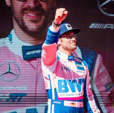

DTM
Deutsche Tourenwagen Masters (DTM, German Touring Car Masters) je njemačko automobilističko natjecanje koje je pokrenuto osamdesetih godina prošlog stolječa.
U natjecanju sudjeluju 3 največa njemačka proizvođača automobila: Audi, Mercedes i BMW, ali i drugi veliki europski proizvođači. Utrke se održavaju na legendarnim europskim stazama s naglaskom na Njemačku.
Od početka natjecanja održano je preko 30 sezona, 400 utrka i sudjelovalo je skoro 400 vozača, a danas drži status jednog od največih svijetskih automobilstičkih natjecanja.
Povijest natjecanja
Originalni DTM punog imena Deutschen Produktionswagen Meisterschaft započeo je s održavanjem 1984. godine, a postojao je do 1996. godine kada se proširio na International Car Touring Series (ITR) spojivši se sa serijom International Touring Car Series.
Utrke su se najprije održavale u Njemačkoj, a kasnije po Europi i svijetu. Međutim pod upravom FIA-e (Međunarodne automobilističke organizacije) natjecanje je postalo neisplativo za proizvođače automobila koji su se natjecali, a gledanost samog sporta znatno je pala.
2000. godine počinje se održavati takozvani novi DTM (Deutsche Tourenwagen Masters) kakvog poznajemo danas. Kako se greške iz IRT-a ne bi ponovile, od osnivanja današnjeg DTM-a troškovi se reguliraju, a prvenstvo se vraća njemačkim korijenima tako da su se sve utrke vratile u Europu s naglaskom na Njemačku.
Jedina tri proizvođača automobila koja su sudjelovala u natjecanju bila su Opel, Mercedes-Benz te Audi koji službeno u DTM dolazi 2004. godine. No, krajem sezone 2005. godine Opel se povlači zbog smanjenja troškova te su Audi i Mercedes 2006. godine ponudili još 10 automobila.
Razdoblje od 2007. do 2009. obilježila je dominacija Audija s kojim su Mattias Ekström i Timo Scheider osvojili tri naslova prvaka. Dominacija prestaje kada 2010. godine Britanac Paul di Resta osvaja naslov s Mercedesom. Dvije godine nakon BMW se vraća u DTM nakon dvadesetogodišnjeg izbivanja, a 2019. godinu obilježava privremeno povlačenje Mercedesa i uključivanje četiri nova proizvođača u natjecanje.
Danas se ukupno natječe šest konstruktora od kojih je Mercedes aktualni prvak.
Trkači format
Od 2015. godine odvijaju se po dvije utrke na istoj lokaciji u jednome vikendu. Trkači vikend sastoji se od jedne utrke koja se vozi u subotu te druge koja se vozi u nedjelju. Ove godine vozi se 16 utrka na osam različitih staza.
Uoči svake utrke voze se kvalifikacije u trajanju od 20 minuta koje odlučuju o startnom poretku. Trajanje jedne utrke nije ograničeno brojem krugova već vremenski, a 2017. godine donesena je odluka o trajanju utrke od 55 minuta i jednoga kruga. To je pravilo uvedeno zbog lakšeg televizijskog prijenosa jer vremensko ograničenje sprječava nepredviđena oduživanja.
Tijekom utrke svaki je vozač obavezan jednom stati u boks na promjenu guma čijih setova za svaku utrku ima šest. Zaustavljanje u boks za vrijeme sigurnosnog automobila je dopušteno, ali ono se ne broji kao obavezno stajanje.
Trenutno se za naslov prvaka DTM-a natječu 24 stalna vozača. Njihovi se rezultati boduju nakon svake utrke i kvalifikacija. Najbrži vozač na kvalifikacijama osvaja tri boda, a sljedeća dva mjesta osvajaju po dva i jedan bod. Nakon utrke boduje se 10 najbržih vozača po sljedećem sistemu: 25-18-15-12-10-8-6-4-2-1 počevši od prvog mjesta.
Na kraju sezone bodovi se zbrajaju te vozač s najvećim brojem bodova osvaja naslov DTM prvaka. Na temelju zbroja bodova vozača koji voze za isti tim te zbroja bodova osvojenih u automobilima istog proizvođača dodjeljuju se titule DTM ekipnog i konstruktorskog prvaka.
2022
Sezona 2022. bit će 23. sezona od kad je natjecanje ponovno pokrenuto. Na gridu će biti 6 proizvođača, 17 timova te 29 vozača, te će se voziti 16 rundi na 8 staza.
Do sada je ove sezone održana jedna utrka u Portugalu na stazi Portimao, gdje je u prvoj utrci pobjedu odnio australac Lucas Auer, dok je u drugoj slavio svicarac Nico Müller.
Trenutno u ukupnom poretku vozača vodi talijan Mirko Bortolotti s 35 bodova, vodeća ekipa je GRT, a vodeći proizvođač Mercedes.
| Trenutna top 3 vozača | ||
|---|---|---|
| No. | Vozač | Ekipa |
| 1. | Mirko Bortolotti | GRT |
| 2. | Nico Müller | TEAM ROSBERG |
| 3. | Lucas Auer | MERCEDES-AMG TEAM WINWARD |